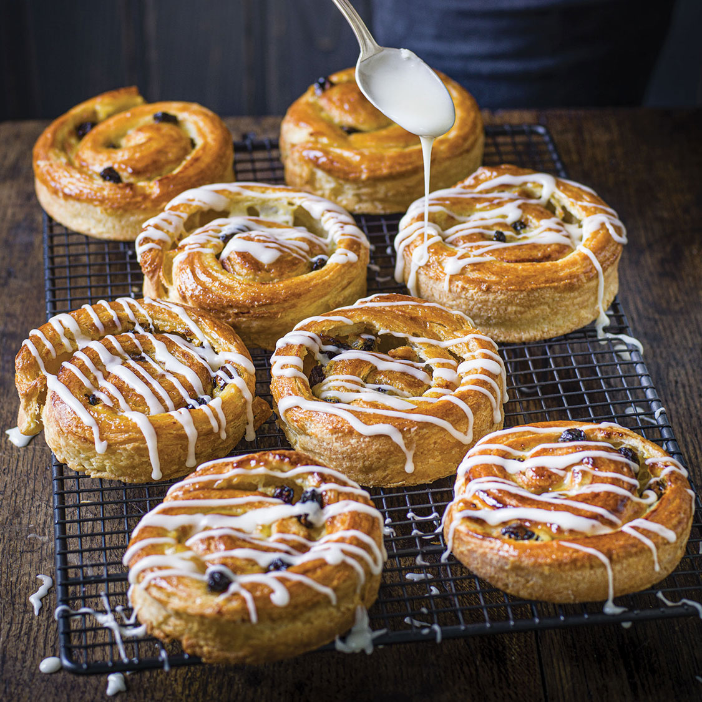

Ingredientes
- Pasas:
- - 3/4 taza de pasas gruesas y oscuras
- - 3/4 taza de agua
- - 1/3 taza de coñac (opcional)
- - 4 cucharaditas de levadura seca instantánea
- - 1/2 taza de agua tibia
- - 3 1/2 tazas de harina para pan
- - 1/2 taza de leche
- - 1/3 taza de azúcar granulada
- - 3 cucharadas de mantequilla sin sal, derretida y enfriada
- - 1 1/2 cucharaditas de sal fina
- - 8 onzas (1 taza) de mantequilla sin sal, ablandada
- - 2/3 taza de frangipane o relleno de almendras dulces
- - 1 huevo grande
- - 2 cucharadas de leche
Para la masa:
Para el huevo lavado:
PREPARACIÓN
- Paso 1: Mezclar las pasas, el agua y el coñac (opcional) y dejar reposar durante 12 a 24 horas.
- Paso 2: Disolver la levadura en agua tibia durante 5 minutos en el bol de una batidora de pie.
- Paso 3: Agregar la harina, la leche, el azúcar, 3 cucharadas de mantequilla derretida y la sal a la levadura disuelta y mezclar a velocidad media durante unos 2 minutos.
- Paso 4: Formar una bola con la masa y cubrirla sin apretar con envoltura de plástico. Dejar reposar a temperatura ambiente durante 30 minutos.
- Paso 5: Extender la masa hasta formar un rectángulo de 10 x 15 pulgadas y dejar reposar durante 40 minutos más.
- Paso 6: Untar la mantequilla ablandada sobre la masa rectangular y luego doblar la masa en tercios, como una carta. Enrollar nuevamente el rectángulo largo y delgado hasta obtener la forma original de 10 x 15 pulgadas.
- Paso 7: Doblar la masa en tercios nuevamente, cubrirla con film transparente y dejar reposar en el refrigerador durante 1 hora. Repetir este proceso una vez más.
- Paso 8: Extender la masa hasta formar un rectángulo de 10 x 30 pulgadas y extender la frangipane sobre la superficie del rectángulo.
- Paso 9: Escurrir las pasas, desechar el líquido y esparcirlas uniformemente sobre la superficie del relleno de almendras.
- Paso 10: Enrollar la masa hasta formar un tronco y cortarla transversalmente en 18 rebanadas.
- Paso 11: Colocar cada rebanada en una bandeja para hornear ligeramente engrasada, con al menos 2 pulgadas de espacio entre cada una. Cubrir sin apretar con envoltura de plástico y dejar reposar durante 60 a 90 minutos hasta que casi dupliquen su tamaño.
- Paso 12: Precalentar el horno a 375°F (190°C). Batir el huevo y 2 cucharadas de leche para hacer un huevo batido.
- Paso 13: Cepillar el huevo batido por la superficie de cada masa.
- Paso 14: Hornear los pains aux raisins durante 14 a 16 minutos, hasta que estén inflados y dorados.
- Paso 15: Dejar enfriar y disfrutar de tus deliciosos pains aux raisins caseros.